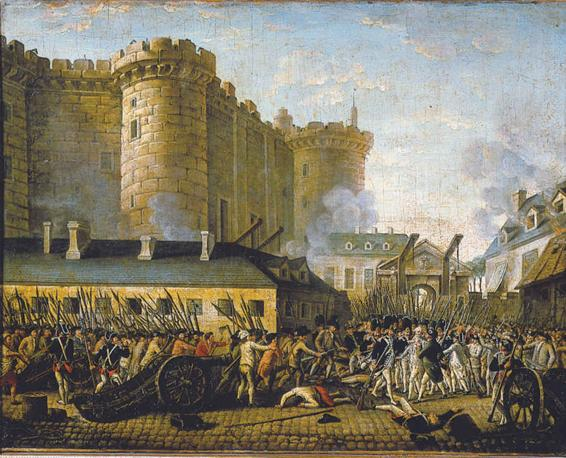
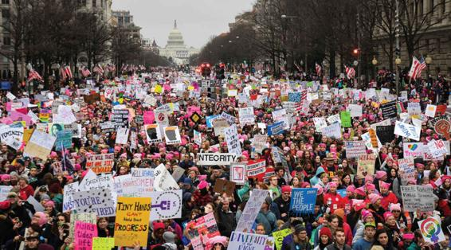
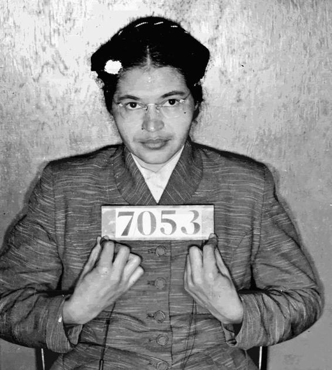
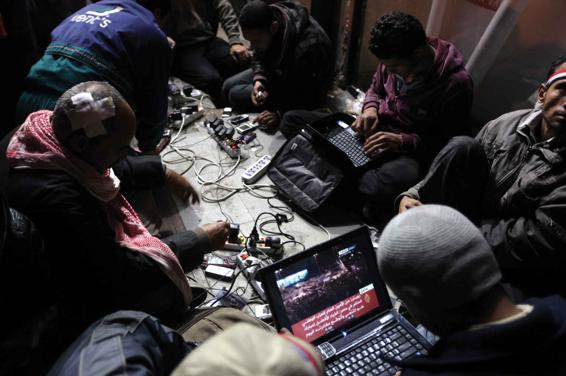
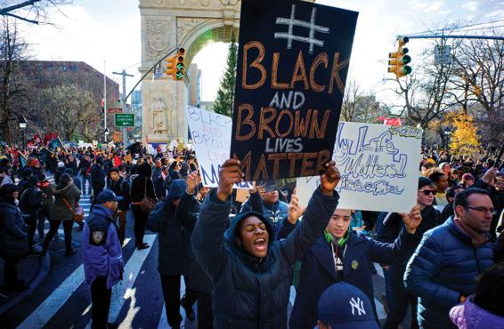

Political and Social Change through Social Movements
Political life is by no means carried out only within the framework of political parties, voting, and representation in legislative and governmental bodies. When groups’ objectives or ideals cannot be achieved within, or are blocked by, this framework (as under authoritarian regimes), political and social change may require other forms of political action. Social movements, which operate outside the established political system, have been an important source of social change throughout U.S. history. Terrorism can be seen as an extreme form of social movement—one that is willing to use violence, often directed against civilian populations, to achieve its goals.
Why Do Social Movements Occur?
Because mass social movements have been so important around the world over the past two centuries, many theories try to account for them. Some theories were formulated early in the history of the social sciences; the most important were those of Karl Marx. He intended his views not just to analyze the conditions of revolutionary change but to actually promote such change. Indeed, Marx’s ideas had an immense practical effect on twentieth-century social change.
We examine four frameworks for the study of social movements, many of which were developed in the context of revolution: Economic deprivation, resource mobilization, structural strain, and fields of action.
Economic Deprivation Marx’s view of social movements arises from his interpretation of human history (see Chapter 1). According to Marx (1983; 2008, orig. 1867; see also Marx and Engels, 2008, orig. 1848), the development of societies involves periodic class conflicts that lead to revolutionary change. Class struggles derive from the contradictions—irresolvable tensions—in societies. In any stable society, there is a balance among the economic structure, social relationships, and the political system. As the forces of production change, contradictions intensify, leading to open clashes between classes—and ultimately to revolution.
Deprivation of the peasantry compared to the elite in France led to the overthrow of the monarchy.
Industrial capitalism, according to Marx, sets up contradictions, which in his view would lead to revolutions prompted by Communist ideals (Appelbaum, 1988). Industrial capitalism, an economic order based on the private pursuit of profit and on competition among firms to sell their products, requires individual capitalists to cut costs continually in order to remain competitive. This cost-cutting is accomplished in two principal ways: Firms reduce wages at home, often by replacing workers with the latest “labor-saving” technologies, and they move their production to low-wage countries overseas. Both these strategies, while enabling businesses to survive, create a gulf between a rich minority that controls the industrial resources and an increasingly impoverished majority of waged workers. The resulting wealth disparity not only is seen as unjust by workers, fueling their revolutionary fervor, but also creates a fatal economic contradiction: Even though businesses produce an ever-increasing supply of goods, the growing masses of workers become too poor to buy them. This results, in the long run, in declining profits and economic stagnation. Capitalism, in other words, is the first economic system in history to suffer from producing too many goods rather than too few. The resulting economic crises, Marx predicted, would eventually lead the workers to overthrow the capitalist system and set up an alternative one in which they could better enjoy the fruits of their own labor. When a dominant class is particularly entrenched, Marx believed, violence is necessary to achieve the required transition. In other circumstances, this process might happen peacefully through parliamentary action; a violent revolution would not be necessary.
Contrary to Marx’s expectations, revolutions failed to occur in the advanced industrialized societies of the West. Why? One reason is that capitalism proved to be more resilient than Marx had predicted, finding ways to resolve the economic contradictions Marx believed would eventually lead to its collapse. The welfare state, enacted throughout Europe and North America in response to the Great Depression of the 1930s, was one solution: Raise taxes, especially upon wealthier individuals, to provide a “social safety net” for those who are less well off. Examples include government-funded retirement programs such as Social Security, unemployment compensation, welfare payments to the poor, and universal health care. Globalization provides another solution: While the loss of jobs to low-wage countries hurts many workers, it also results in ever-cheaper commodities, enabling people to buy products they otherwise might not be able to afford. A third solution is the credit economy: Even when their incomes are stagnant or declining, people are able to consume goods (at least for a while). Whether these approaches will suffice in the long run is currently being challenged by the rise of populist movements around the world.
Sociologist James Davies (1962), a critic of Marx, offered another explanation for the absence of revolutions in industrialized societies. Davies identified periods in history when people lived in dire poverty but did not rise up in protest. Constant poverty or deprivation does not make people into revolutionaries; rather, they usually endure such conditions with resignation or mute despair. Social protest, and ultimately revolution, is more likely when people’s living conditions improve. Then their expectations also go up. If improvement in actual conditions subsequently slows down, propensities to revolt develop because rising expectations are frustrated.
Thus, it is not absolute deprivation that leads to protest but relative deprivation—the discrepancy between people’s actual lives and what they think could realistically be achieved. Davies’s theory illuminates the connections between revolution and modern social and economic development. The ideals of progress, together with expectations of economic growth, induce rising hopes, which, if frustrated, spark protest. Such protest gains strength from the ideas of equality and democratic political participation, which were key not only in the American Revolution of 1776 and the Russian Revolution of 1917 but also in the revolutions of 1989 in Europe.
As Charles Tilly (1978) has pointed out, however, Davies’s theory does not explain how and why different groups mobilize to seek revolutionary change. Protest might often occur against a backdrop of rising expectations; to understand how it becomes a mass social movement, we need to identify how groups collectively organize to make effective political challenges.
Resource Mobilization In From Mobilization to Revolution, Tilly (1978) analyzed processes of revolutionary change in the context of broader forms of protest and violence. He distinguished four main components of collective action taken to contest or overthrow an existing social order:
The organization of the group or groups involved. Protest movements are organized in many ways, varying from the spontaneous formation of crowds to tightly disciplined revolutionary groups. The Russian Revolution, for example, began as a small group of activists.
Mobilization, the ways in which a group acquires resources to make collective action possible. Such resources may include material goods, political support, and weaponry. Lenin acquired material and moral support from a sympathetic peasantry, together with many townspeople.
The common interests of those engaging in collective action, what they see as the gains and losses resulting from their policies. Common goals always underlie mobilization to collective action. Lenin built a broad coalition of support because many people had a common interest in removing the existing government.
Opportunity. Chance events may provide opportunities to pursue revolutionary aims. Numerous forms of collective action, including revolution, are influenced by such incidental events. Lenin’s success depended on contingent factors, including success in battle. If Lenin had been killed, would there have been a revolution?
Collective action can be defined as people acting together in pursuit of shared interests—for example, gathering to demonstrate in support of their cause. Some of the people may be intensely involved; others may lend more passive or irregular support. Effective collective action, such as action that culminates in revolution, usually moves through all four stages.
Social movements, in Tilly’s view, develop as a way of mobilizing group resources either when people have no institutionalized means of voicing their concerns or when the state authorities repress their needs. Although collective action at some point involves open confrontation with the political authorities, it is not likely to affect established patterns of power unless groups who are systematically organized support it.
Modes of collective action and protest vary with historical and cultural circumstances. In the United States today, for example, most people are familiar with mass marches, large assemblies, and street riots. Other types of collective protest (such as fights between villages, machine breaking, or lynching) have become less common or have disappeared. Protesters can also build on examples taken from other places; for instance, guerrilla movements proliferated in various parts of the world once disaffected groups learned how successful guerrilla actions could be against regular armies. And new forms of social protest are now being accomplished via the Internet, as exemplified during the 2016 election, including the greater influence of the alt-right and the increasingly effective use of social media such as Facebook and Twitter to mobilize support. Another example is the January 21, 2017, women’s march, a worldwide protest in support of women’s rights and other human rights issues. Globally, some 700 marches mobilized an estimated 5 million people, including 3–4 million in the United States, a half million of whom marched in Washington (Darrow, 2017; Hamilton, 2017; Stein, Hendrix, and Hauslohner, 2017; Women’s March, 2017).
On January 21, 2017, hundreds of thousands of protesters descended on the nation’s capital for the Women’s March on Washington. Across the globe, an estimated 5 million people participated in the march.
When and why does collective action become violent? After studying many incidents in Western Europe since 1800, Tilly concluded that most collective violence develops from action that is not initially violent. Whether violence occurs depends not so much on the nature of the activity as on other factors—in particular, how the authorities respond. Consider the street demonstration: The vast majority of such demonstrations occur without damage to people or property. A few lead to violence and are then labeled as riots. Sometimes the authorities step in when violence has already occurred; more often, the historical record shows, the authorities are the originators of violence and, in fact, are responsible for most deaths and injuries. This is not surprising given their special access to arms and military discipline. The groups they attempt to control, conversely, do greater damage to objects and property.
Tilly’s concepts have wide application, and his use of them is sensitive to the variability of historical time and place. How social movements are organized, the resources they mobilize, the common interests of groups contending for power, and chance opportunities are all important facets of social transformation. According to Theda Skocpol (1979), Tilly assumes that social movements are guided by the deliberate pursuit of interests and that successful revolutionary change occurs when people realize these interests. Skocpol, in contrast, sees social movements as more ambiguous and indecisive in their objectives. Revolutions, she emphasizes, emerge largely as unintended consequences of more partial aims:
In fact, in historical revolutions, differently situated and motivated groups have become participants in complex unfoldings of multiple conflicts. These conflicts have been powerfully shaped and limited by existing social, economic and international conditions. And they have proceeded in different ways depending upon how each revolutionary situation emerged in the first place. (Skocpol, 1979)
Skocpol’s argument seems correct when we analyze the revolutionary changes that occurred in Eastern European societies in 1989, compared with earlier revolutionary episodes.
Structural Strain Neil Smelser (1963) distinguished six conditions underlying the origins of collective action in general and social movements in particular: structural conduciveness, structural strain in society, generalized beliefs, precipitating factors, effective leadership, and the nature of social control directed against the social movement.
Structural conduciveness refers to the social conditions promoting or inhibiting the formation of social movements. In Smelser’s view, the sociopolitical system of the United States leaves open certain avenues of mobilization for protest because there is little or no state regulation in those areas. For example, there is no state-sponsored religion. People are free to exercise their religious beliefs. This creates a conducive environment in which religious movements might compete for individuals, so long as they do not transgress criminal or civil law.
Conducive conditions are not enough to bring a social movement into being. There must be structural strain—tensions (in Marx’s terminology, contradictions) that produce conflicting interests. Uncertainties, anxieties, ambiguities, and direct clashes of goals are expressions of such strains. Sources of strain may be general or specific. Thus, sustained inequalities between ethnic groups create overall tensions; these may become focused in specific conflicts when, say, Blacks begin to move into a previously all-White area.
Rosa Parks’s refusal to give up her seat to a White man on a bus in 1955 sparked the civil rights movement and is an example of a precipitating factor.
Social movements do not develop simply as responses to vaguely felt anxieties or hostilities. They are shaped by the influence of generalized beliefs—definite ideologies—that crystallize grievances and suggest courses of action to remedy those grievances. Revolutionary movements, for instance, are based on ideas about why injustice occurs and how it can be alleviated by political struggle.
Precipitating factors are events that trigger direct action by those involved in the movement. In 1955, when a Black woman named Rosa Parks refused to give up her seat to a White man on a bus in Montgomery, Alabama, her action helped spark the civil rights movement (see Chapter 11).
The first four conditions combined might occasionally lead to street disturbances or outbreaks of violence, but such incidents do not promote the development of social movements unless a coordinated group mobilizes for action. Leadership and some means of regular communication among participants, together with funding and material resources, are necessary for a social movement to exist.
Finally, the manner in which a social movement develops is influenced by the operation of social control. The governing authorities may respond initially by intervening in the conditions of conduciveness that gave rise to the movement. For instance, steps might be taken to reduce the ethnic inequality that generates resentment and conflict. Other important aspects of social control concern the responses of the police or armed forces. A harsh response might spark further protest and help solidify the movement. Also, doubt and divisions within the police and military can be crucial in deciding the outcome of confrontations with revolutionary movements.
Smelser’s model is useful for analyzing the sequences in the development of social movements and collective action in general. Each stage “adds value” to the overall outcome; also, each stage is a necessary condition for the next one. But Smelser’s theory bears some criticism as well. For example, some social movements become strong without precipitating incidents. Conversely, a series of incidents might highlight the need to establish a movement to change the circumstances that gave rise to the incidents. Also, a movement itself might create strains, rather than develop in response to them. For example, the women’s movement has sought to identify and combat gender inequalities where they had previously gone unquestioned. Smelser’s theory treats social movements as responses to situations, rather than acknowledging that members might spontaneously organize to achieve desired social changes. In this respect, his ideas contrast with the approach developed by Alain Touraine.
Fields of Action Alain Touraine (1977, 1981) developed his analysis of social movements on the basis of four main ideas. The first, which he called historicity, explains why there are many more social movements in the modern world than in earlier times. In modern societies, individuals and groups know that social activism can achieve social goals and reshape society.
Second, Touraine focused on the rational objectives of social movements. Such movements are not irrational responses to social divisions or injustices; rather, they develop from specific views and rational strategies for overcoming injustices.
Third, Touraine saw a process of interaction in the shaping of social movements. Movements develop in deliberate antagonism with established organizations and sometimes with rival social movements. According to Touraine, other theories of social movements have not adequately considered how the objectives of a social movement are shaped by encounters with others holding divergent positions and by the ways in which they themselves influence their opponents’ outlooks and actions. For instance, the objectives and outlook of the women’s movement were shaped in opposition to the male-dominated institutions the women’s movement seeks to alter. The movement’s goals and outlook have shifted in relation to its successes and failures and have influenced men’s perspectives. These changed perspectives, in turn, have stimulated a reorientation in the women’s movement.
Fourth, social movements and change occur in the context of “fields of action.” A field of action comprises the connections between a social movement and the forces or influences against it. Mutual negotiation among antagonists in a field of action may produce the social changes sought by the movement, as well as changes in the movement itself and in its antagonists. In either circumstance, the movement may evaporate or become institutionalized as a permanent organization. For example, labor union movements became formal organizations when they achieved the right to strike and to engage in types of bargaining acceptable to both workers and employers. These changes were forged out of earlier processes involving widespread violent confrontation on both sides. Where there are continuing sources of conflict (as in the relation between unions and employers), new movements still tend to emerge.
Touraine’s analysis can also be applied to movements concerned with individual change. For instance, Alcoholics Anonymous is a movement based on medical findings about the harmful effects of alcohol on people’s health and social activities. The movement has been shaped by its own opposition to advertising that encourages alcoholic drinking and by its attempt to confront the pressures alcoholics face in a society that readily tolerates drinking.
Technology and Social Movements
Recently, two of the most influential forces in late modern societies—information technology and social movements—have come together with astonishing results. Social movements worldwide can now join in huge regional and international networks, including nongovernmental organizations, religious and humanitarian groups, human rights associations, consumer protection advocates, environmental activists, and others campaigning in the public interest. These electronic networks can respond immediately to events as they occur; gain access to and share sources of information; and put pressure on corporations, governments, and international bodies as part of their campaigning strategies. The Internet has been at the forefront of these changes, although cell phones, fax machines, and satellite broadcasting also hastened their evolution.
The ability to electronically coordinate international political campaigns is worrisome for governments and inspiring to participants in social movements. Indeed, the number of international social movements has grown steadily with the spread of the Internet. From global protests in favor of canceling developing world debt to the international campaign to ban land mines (which culminated in a Nobel Peace Prize), the Internet has united campaigners across national and cultural borders. Some observers argue that the information age is witnessing a migration of power away from government and toward new nongovernmental alliances and coalitions. Unlike revolutions and protests at earlier points in history, the Internet and social media now facilitate revolutionary movements. Through the use of Twitter, Facebook, Internet chat rooms, and other forms of social media, protesters and refugees (as well as jihadists) can now report in “real time” what they did and saw. Social movements now use social media to transmit messages and images to their peers and fellow protesters, and to viewers worldwide as well.
Antigovernment bloggers in Egypt gather in a Cairo café in Tahrir Square.
The original 2011 Arab Spring protests, for example, had far-reaching effects on protests worldwide. Images and video of young people’s activism—and the political changes it forged—instantly traveled the world through social media, inspiring large protests across the globe (Kulish, 2011). In India, hundreds of thousands of disillusioned young people supported rural activist Kisan Baburao “Anna” Hazare in his hunger strike. Hazare starved himself for 12 days until the Indian Parliament met some of his demands to implement an anticorruption measure. In Israel, an estimated 430,000 people gathered in Tel Aviv, Jerusalem, and Haifa to protest high unemployment, high costs of living, and other social injustices. In London, violence erupted at a protest march organized by the Trades Union Congress (TUC); an estimated 250,000 to 500,000 people marched from the Thames Embankment to the Houses of Parliament to Hyde Park to show their opposition to planned public spending cuts. “Occupy Wall Street” and “Black Lives Matter” protests have been held throughout the United States. All these movements inspired one another through social media.
Yet the power of social media–generated protests does not always lead to the desired social change. While the overthrow of Egyptian president Mubarak did produce the first democratic election in Egyptian history, the winner of the election—Mohamed Morsi, a leading member of the Muslim Brotherhood—soon issued a constitutional declaration giving himself virtually unlimited power. This triggered another wave of popular protests, resulting, unfortunately, not in a peaceful return to greater democracy. Instead, the Egyptian military staged a coup. Morsi was imprisoned (and eventually sentenced to death); thousands of his followers were killed or imprisoned by the Egyptian military; and Egypt returned to the autocratic rule that had prompted its “Arab Spring” uprisings in the first place. Yemen and Libya descended into civil war, with armed factions—often supported by outside powers—laying waste to cities and villages. Protests in Syria were brutally suppressed by the Assad regime, drawing the United States and Russia into opposite sides in a civil war that forced millions of refugees to flee into Europe.
These unfortunate developments, in turn, resulted in a rise of anti-immigrant political movements throughout Europe and have threatened the European Union’s open-border policy—one of the key components of European unity. Social media also played a role in Brexit: One study found that Brexit supporters were twice as numerous on Instagram (and five times more active) than “Remain” activists (Polonski, 2016). It has also played a role in the rise of nationalist parties elsewhere in Europe that are calling for an end to the European Union (Polakow-Suransky, 2016). Social media, such as Facebook, Twitter, and WhatsApp, which had prompted protests and calls for democracy across the world in 2011, has been effectively used by Islamic extremists to recruit jihadists and suicide bombers from Europe and North America, facilitating the efforts to create the so-called Islamic State across a vast swath of the Middle East (Blaker, 2015). Social media clearly cuts both ways: It can be used to promote either democracy or violent social movements.
Globalization and Social Movements
Social movements vary widely. Some have only a few dozen members; others include thousands or millions of people. Although some social movements operate within the law, others are illegal or underground groups. Protest movements operate near the margins of what is legally permissible.
Social movements often seek change on a public issue, such as expanding civil rights for a segment of the population. In response, counter movements sometimes arise in defense of the status quo. The campaign for women’s right to abortion, for example, has been challenged by anti-abortion (“pro-life”) activists, who believe that abortion should be illegal.
Black Lives Matter is a social movement calling for an end to racial profiling, police brutality, and the mass incarceration of Black people.
Often, laws or policies are altered as a result of the action of social movements. These changes can have far-ranging effects. For example, it used to be illegal for workers’ groups to call their members out on strike, and striking was punished with varying degrees of severity in different countries. Eventually, however, the laws were amended, making the strike a permissible tactic of industrial conflict.
The last few decades have seen an explosion of social movements around the globe. These movements—ranging from the civil rights and feminist movements of the 1960s and 1970s, respectively, to the antinuclear and ecological movements of the 1980s, to the gay rights campaign of the 1990s, to today’s Black Lives Matter—are called new social movements. They are often concerned with the quality of private life as much as with political and economic issues, calling for changes in the way people think and act.
What makes new social movements “new” is that, unlike conventional social movements, they are not based on single-issue objectives related to the distribution of economic resources or power. Rather, they seek collective identities based on entire lifestyles, often calling for sweeping cultural changes. New social movements have emerged around issues such as ecology, peace, gender and sexual identity, gay and lesbian rights, women’s rights, alternative medicine, and opposition to globalization.
Because new social movements involve new collective identities, they can provide a strong incentive for action. Participation is viewed as a moral obligation (and even a pleasure), rather than a calculated effort to achieve some specific goal. Moreover, the forms of protest new social movements choose constitute an “expressive logic” whereby participants make a statement about who they are: Protest is an end in itself, a way of affirming one’s identity, as well as a means of achieving concrete objectives (Polletta and Jasper, 2001).
The rise of new social movements is a reflection of the changing risks facing human societies. Traditional political institutions are increasingly unable to cope with the challenges before them, such as threats to the natural environment, the potential dangers of nuclear energy and genetically modified organisms, and the powerful effects of information technology. Because existing democratic political institutions cannot fix these problems, they go ignored or avoided until a full-blown crisis occurs.
As a cumulative effect of these new challenges and risks, people feel less secure and more isolated—a combination that leads to a sense of powerlessness. By contrast, corporations, governments, and the media appear to be dominating more aspects of people’s lives, heightening the sensation of a runaway world. There is a growing sense that globalization presents ever-greater risks to citizens’ lives.
Although faith in traditional politics seems to be waning, the growth of new social movements is evidence that citizens in late-modern societies are not apathetic or uninterested in politics. Rather, there is a belief that direct action and participation are more useful than reliance on politicians and political systems. More than ever before, people are supporting social movements as a way of putting complex moral issues at the center of social life. In this respect, new social movements are helping revitalize civic culture and civil society—the sphere between the state and the marketplace occupied by family, community associations, and other noneconomic institutions.
Nationalist Movements
Some of the most important social movements today are nationalist movements. Although the countries of the world have become more interdependent, especially since the 1970s, this interdependence has not spelled the end of nationalism. It may even have helped intensify it. Recent thinkers have contrasting ideas about why this is so. There are also disagreements about the stage of history at which nationalism, the nation, and the nation-state came into being.
Nationalism and Modern Society Different nations have followed divergent patterns of development in relation to ethnic communities. In some, including most of the nations of Western Europe, a single ethnic community expanded and pushed out earlier rivals. Thus, in seventeenth-century France, several other languages were spoken and different ethnic histories were linked to them. As French became the dominant language, most of these rivals disappeared. Yet remnants persist in a few areas. One is in the Basque country overlapping the French and Spanish frontiers. The Basque language is different from either French or Spanish, and the Basques claim a separate cultural history. Some Basques want their own nation-state. Although there has been nothing like the level of violence seen in other areas—such as East Timor, or Chechnya in southern Russia—separatist groups in the Basque country have sporadically used bombing campaigns to further their goal of independence.
Forty years ago, in a work that has shaped our understanding of the rise of modern nation-states, Benedict Anderson argued that modern nation-states were actually (to use his terms) “imagined communities” that were largely the result of the rise of capitalism, abetted by the printing press, which facilitated the widespread dissemination of the notion that the “nation” was composed of people with shared ethnic and cultural identity (Anderson, 2016; orig. 1983). National identities, he argued, were socially constructed—a process that began in Western Europe and then spread around the globe. Nations might be socially constructed, he argued, but their adherents do not see them this way: Nationalism, and national identity, are experiences sufficiently real that people are often willing to kill (and be killed) for their countries. Nationalism, as we have noted previously in this chapter, is resurgent at this time: Increasing numbers of people across Europe see themselves as British (and sometimes even Scottish or English before British) or French or some other nationality, rather than as European. Anderson’s notion of “imagined community” can even apply to groups of individuals without national borders. These range from the so-called Islamic State, whose violent efforts to create a homeland in Syria and Iraq have largely been thwarted; online communities of like-minded people; diasporic groups such as Palestinians (Al-Hardan, 2016), Jews (Abramson, 2017), and Kurds (Ross and Mohammadpur, 2016); groups based on sexual identity (Alm and Martinsson, 2017); and even transnational corporations (Buckler, 2016).
Nations without States The persistence of well-defined ethnic communities within established nations contributes to the phenomenon of nations without states—imagined communities, to use Anderson’s phrase, that exist in other states but lack a territorial state of their own. Kurds, Palestinians, and Tibetans are current examples of nations who aspire to their own state. This has been a significant source of conflict in the world today.
Several types of nations without states can be recognized, depending on the relationship between the ethnic community and the nation-state in which it exists (Guibernau, 1999):
In some situations, a nation-state may accept the cultural differences among its minorities and allow them a certain amount of active development. Thus, in Great Britain, Scotland and Wales are recognized as having histories and cultural features partly divergent from the rest of the United Kingdom, and, to some extent, they have their own institutions. The majority of Scots, for instance, are Presbyterians, and Scotland has long had a separate educational system from that of England and Wales. Scotland and Wales achieved further autonomy within the United Kingdom with the creation of a Scottish Parliament and a Welsh Assembly in 1999.
Some nations without states have a higher degree of autonomy. In Québec (the French-speaking province of Canada) and Flanders (the Dutch-speaking area in northern Belgium), regional political bodies have the power to make major decisions even though they are not fully independent. They also contain nationalist movements agitating for complete independence.
Some nations completely lack recognition from the state that contains them. In such cases, the larger nation-state uses force to deny recognition to the minority. Palestinians are an example. Others include the Tibetans in China, and the Kurds, whose homeland overlaps parts of Iran, Iraq, Syria, and Turkey.
States without Nations Recall the definition of nation-state: “particular types of states, characteristic of the modern world, in which governments have sovereign power within defined territorial areas, and populations are citizens who know themselves to be part of single nations.” What happens when significant sectors of the population come from different ethnic or tribal groups, and they do not believe that they are a part of the imagined community that comprises the nation-state?
This has proven to be a problem in many African and Middle Eastern countries, often with violent results. The borders of these countries were the result of European colonialism, drawn up by the major European powers at the Berlin Conference of 1884–1885. The borders reflected the negotiated interests of Germany, France, Britain, Belgium, Portugal, Spain, and other European countries; they had little or nothing to do with the tribal identities of the people who actually lived there. In many of these countries, boundaries between colonial administrations that were set arbitrarily in Europe ignored economic, cultural, or ethnic divisions among the population being colonized. As a consequence, most colonized areas contained a mosaic of ethnic communities and other groups (Figure 13.3).
Nationalist movements promoting independence in Africa following World War II sought to free the colonized areas from European domination. Once this had been achieved, the new leaders faced enormous problems trying to create national unity. Many of the leaders in the 1950s and 1960s had been educated in Europe or the United States, and there was a vast gulf between them and their citizens, most of whom were illiterate, poor, and unfamiliar with the rights and obligations of democracy. Under colonialism, some ethnic groups had prospered more than others; these groups had different interests and goals, and they legitimately saw each other as enemies. When the former colonies finally achieved independence in the second half of the twentieth century, it was hard to create a sense of nationhood. Although nationalism had played a great part in securing the independence of colonized areas, it was confined to small groups of activists and did not reflect the majority of the population. As a result, many postcolonial states were threatened by internal rivalries and competing claims to political authority. Civil wars broke out in several postcolonial states in Africa, such as Nigeria, Sudan, and Zaire; ethnic rivalries and antagonisms characterized many others in both Africa and Asia.
To take one example, in Sudan—the third-largest country in Africa—about 40 percent of the population speaks Arabic and claims Arabic ethnic origins. Elsewhere in the country, particularly in the south, Arabic is barely spoken at all. Once the nationalists took power, they set up a program for national integration, with Arabic as the national language. The attempt was only partly successful, and the stresses it produced are still visible. In January 2011, a referendum was held in South Sudan, with nearly 100 percent of those voting supporting independence. South Sudan became an independent country as a result, although conflicts and open fighting between the two countries remain. Civil war erupted in South Sudan two years after the country gained independence, the result of conflict between the country’s two largest ethnic groups: the Dinka and Nuer. As of January 2018, the United Nations reported that more than five million people lacked adequate food, with an additional 2 million people in danger of extreme food shortage, and 155,000 people in danger of starving to death; 1.3 million children were said to be malnourished (World Food Programme, 2018). Nor is South Sudan alone: Somalia, Nigeria, and Yemen all face conflict and famine, their challenges worsened by drought (Gettleman, 2017).
Figure 13.3
BOUNDARIES OF HISTORICAL ETHNICITIES BEFORE COLONIZATION AND NATIONAL BOUNDARIES
In summary, most states in the developing world underwent different processes of nation formation from those in the industrialized world. States were imposed externally on areas that often had no prior cultural or ethnic unity, leading to problems that are very difficult to overcome. Many of these newly formed countries are examples of what we earlier described as failed states.